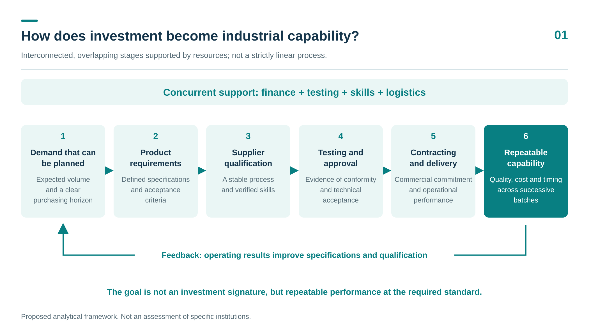
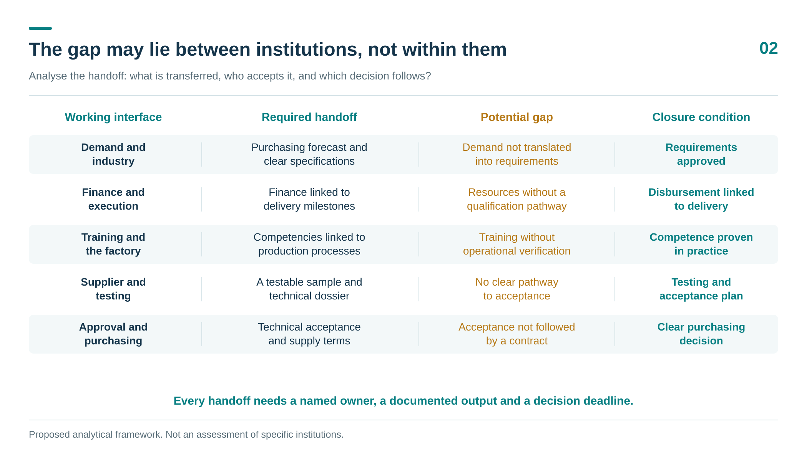
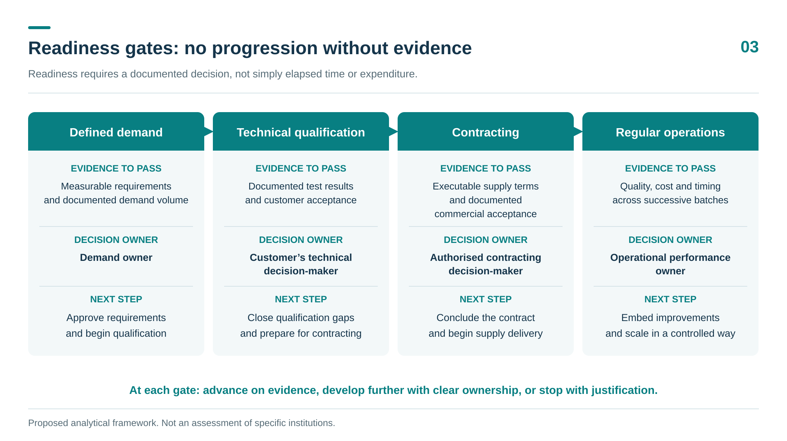

From clear roles to connected execution
The first article examined the transition from momentum to industrial and technological depth. The second considered the pivotal institutions and the difference between their intended roles and actual performance. A decisive question remains: how can these multiple roles become a connected execution pathway through which an investment opportunity develops into dependable productive capability?
Each institution may have a clear mandate, and each programme may have resources and performance indicators, yet a supplier’s or investor’s progress can stall at a point between two institutions. The factory needs a qualified supplier; the supplier needs demand that justifies investment; the financier needs evidence of viability; and the training provider needs to know which skills will be required and when. Each party has legitimate requirements, but bringing them together does not, by itself, reconcile those requirements.
I therefore propose examining institutional and execution gaps through the points at which work and decisions pass from one party to another. A gap, in this sense, is an incomplete function or a relationship that fails to connect one institution’s output to another’s need at the right time. This is a diagnostic approach to execution design, not a claim that every gap described below exists in Saudi Arabia, nor an assessment of any specific institution without evidence. The examples are hypothetical, intended to explain potential mechanisms of delay and ways to address them.

1 From market size to demand a supplier can act on
One of the most important gaps arises when sector ambitions are translated into specific demand for components, processes and services. Vehicle production targets and announced capacity help indicate the direction of development, but they do not, on their own, justify investing in a production line for a particular component. Suppliers need to understand specifications, potential volumes, their timing and progression, the supplier-selection process, and who holds purchasing authority.
Consider a local company evaluating whether to manufacture a metal automotive part. The opportunity may look clear at the aggregate market level, only for the company to discover that suppliers are selected under a global contract, that the design will change, or that locally accessible demand does not justify dedicated equipment. The problem is then the gap between assumed demand and demand the company can actually compete for, rather than a lack of willingness to invest.
What is needed is a verifiable industrial demand map that distinguishes target capacity, actual production, commercial forecasts and contracts. For each component family, it should identify the purchasing decision-maker, entry requirements and procurement timetable, while respecting commercial confidentiality. It should also test whether demand from several buyers could support a shared capability, without assuming that their specifications are identical or treating forecasts as purchase guarantees that do not exist.
2 From supplier nomination to qualification and a contract
Identifying suppliers and listing them in databases is an initial step. Supplier development begins when the gap between a supplier’s current capability and the customer’s requirements is defined, and responsibility for closing it is allocated. Who will help improve the process? Who will finance samples? Who will specify acceptable tests? Who will decide whether qualification has been achieved?
A company may successfully produce a sample yet struggle to maintain consistent quality, document traceability or meet delivery schedules. It may pass a technical assessment but still fail to secure a contract because of commercial terms or a purchasing decision outside the local institution’s authority. Technical qualification, customer approval of the supplier, securing a contract and being able to fulfil it must therefore be treated as distinct stages. Each requires its own evidence; none substitutes for the others.
A field study of the Czech automotive industry offers an important caution. It found limited local linkages and uneven knowledge spillovers from foreign firms to local companies. This finding relates to a particular context, but it cautions against assuming that attracting investment is sufficient, by itself, to build deep supplier linkages. [1]
This gap can be addressed through a shared qualification dossier for each nominated supplier, connecting customer requirements to a specific development plan, its cost, evidence of completion and the next commercial decision. Each review should end with a documented decision: qualification achieved; further development under a defined plan and deadline; or discontinuation of the pathway because it is not viable. The opportunity should not simply remain open in reports.
3 From providing a test to having its result accepted
Testing equipment may be available without providing the precise service a supplier needs. The service may exist, but its results may not be accepted by the target customer, or the appointment may fall after the qualification window. Testing and conformity assessment must therefore be considered part of the production and contracting pathway, while preserving the independence of technical judgement.
The execution question is not simply whether a local laboratory is needed. Which tests attract sufficient recurring demand? What scope of accreditation is required? Will the customer recognise the results? How do turnaround time and cost compare with alternatives? Providing a shared service locally may be viable, while an organised arrangement with an external laboratory at an early stage may be more efficient than establishing an underused facility.
A study of Costa Rica’s medical-device value chain shows that qualification costs, global firms’ sourcing decisions and the scale of demand for certification services can constrain local suppliers’ integration even where global manufacturers are present. Its relevance here is to illustrate how such a gap can arise, not to transfer its conclusions to Saudi Arabia. [2]
The route to acceptance of test results should therefore be agreed before substantial development costs are incurred. Disciplined acceleration addresses waiting time, repeated procedures and unclear requirements; it does not mean lowering safety or quality requirements.
4 From financing a facility to synchronising its operating requirements
Industrial capability formation depends on decisions that no single institution controls: preparing the site, delivering equipment, providing utilities and services, developing workforce skills, approving the process and establishing regular demand. Each institution may complete its work to its own schedule, yet operations may remain delayed because a dependent requirement is still unmet.
Projects within the same supply chain therefore need a shared schedule of tasks, dependencies and deadlines. This should show what depends on what, which delays can be absorbed, and which would alter viability or disrupt a chain of suppliers. Logistics must be understood as the capability to maintain a regular and reliable flow of materials and components, including information, handling and storage, rather than merely proximity to a port or road.
Finance should reflect this progression. Funding equipment does not necessarily cover sample development, retesting or the working capital needed between delivery and payment. Equally, requiring a final contract before any support is provided is not the answer if that contract is itself conditional on investment in qualification. A better approach is to allocate risk across clearly defined stages, with evidence required to advance and decisions on when to stop, while specifying who bears the cost of delay or changing demand.
The same caution applies to materials. Recurring industrial demand can improve the viability of processing and distribution services and help spread some fixed costs, but it does not guarantee lower prices for raw materials or the advanced grades required. The advantage must be tested for the particular material, specification, volume and delivered cost, rather than inferred from the presence of an automotive factory.
5 From trainee numbers to engineering capability in the workplace
Industrial expansion creates an opportunity to build sustained demand for technical and engineering education. However, the viability of a specialised programme or a new college depends on the type, scale and continuity of the work that will emerge, and the career progression it can offer. Aggregate employment forecasts are not sufficient to determine this.
Alignment begins with actual processes. What skills are needed to operate them? What skills are needed to control, maintain and improve them? The answers may change between line installation, production start-up and subsequent efforts to improve productivity and reduce defects. Training designed only around opening-day needs may cover the initial phase without supporting deeper engineering capability later.
The skills plan should be linked to the process and supplier maps, with employers involved in defining and accepting competence and with practical training that can be assessed. Impact should be measured through employment in the relevant field, the ability to perform the work and progression towards higher engineering responsibilities, not enrolment numbers alone. The plan must also be updated as operating schedules or technologies change, so that trainees do not bear the consequences of changing industrial decisions on their own.
6 From a research question to a solution used in production
The automotive industry can generate demand for research and development in materials, processes, software and quality. An OECD study treats the industry as an ecosystem extending beyond the final product to encompass interconnected sectors and providers of knowledge and technology. [3]
Turning a factory’s need into a research project with a clear route to application, however, requires translation. “We need to improve quality” does not define a testable problem. The defect, baseline, available data, required outcome, experimental setting and person responsible for approving the solution must be specified. Agreement is then needed on intellectual property, rights to use the results and funding for the transition from prototype to operation.
Collaboration might, for example, begin with a specific stability problem in a civilian manufacturing process and progress from a limited test to an operational trial and then approval. Laboratory success is an important step, but it does not remove the need to demonstrate performance at the required production scale. This transition needs clear funding and responsibility; otherwise, the research project ends at the point where the factory’s risks begin.
Identifying these research questions and connecting them to sourcing and qualification opportunities requires a more detailed view than sector labels or lists of finished products provide. A car, a medical device and an energy-storage system appear to be very different products, yet some of their requirements may intersect in families of components, materials and manufacturing processes. If analysis remains at sector level, we may miss both where a capability could serve more than one market and where similarities end and different qualification requirements begin.
7 From separate reports to responsibility for completing the pathway
The preceding gaps share a common problem: responsibility may be clear within each institution but unclear when work passes to the next. To address this, I propose assigning an integration owner to each critical pathway, responsible for tracking institutional handoffs, deadlines and the evidence needed to establish readiness, without replacing the investment, commercial or regulatory decision-maker.
The unit of follow-up should be a specific execution case, such as qualifying a supplier for a product family or providing a testing service accepted by identified buyers. The case record should specify the required output, the party that will accept it, the acceptance criterion, the next decision, the deadline and the dependencies. If progress stalls at a handoff, the reason can then be examined: missing evidence, finance, decision-making authority or lack of viability?
This does not require creating a new entity at the outset. A practical arrangement among existing institutions can be the starting point, with periodic reviews of stalled cases and an escalation route when a decision exceeds the team’s authority. Information access should reflect each party’s needs; integration does not require disclosing prices, designs or commercial data to every participant.

How do we know a gap has been closed
I propose starting with a limited number of component or service families, rather than attempting to repair the entire ecosystem at once. Each pathway should be selected on the basis of specific demand, a realistic opportunity to form local capability and a measurable outcome. The experience should then be reviewed before it is expanded.
Progress indicators include the time from supplier nomination to qualification, the proportion of qualified suppliers that secure contracts, delivery reliability and quality after contracting, local value added, the time required for test acceptance, and the match between acquired skills and actual work. For research and development, monitoring should track solutions through industrial trials and into use, distinguishing each stage.
These are proposed indicators for accountability and learning, not achieved results or uniform numerical targets. Monitoring may reveal that some pathways should not continue. The ability to stop a non-viable pathway or adjust its timing is part of good execution, not necessarily a failure to be concealed.

What a coherent industrial base makes possible
If demand is connected to supplier qualification, testing, finance, skills and research, the automotive industry can become an anchor for broader capability formation: engineering services, manufacturing skills, processed materials and reliable logistics that may benefit smaller industries of economic and sovereign importance. Such extension, however, requires additional qualification, customers and evidence of viability. A capability in one sector is not automatically ready for another.
This is where closing the gaps acquires national significance. Each investment should leave behind a capability that can be developed and used again, and institutional coordination should produce results that factories, suppliers and engineers can experience. The next article’s question then becomes meaningful: what does the automotive industry produce besides cars? And how can we distinguish a potential industrial spillover from a shared capability that has become economically usable?
References
[1] Pavlínek, P. & Žížalová, P. (2016). Linkages and spillovers in global production networks: firm-level analysis of the Czech automotive industry. Journal of Economic Geography, 16(2), 331–363. Source
[2] Duke Center on Globalization, Governance & Competitiveness (2013). Costa Rica in the Medical Devices Global Value Chain. Source
[3] OECD (2023). How the green and digital transitions are reshaping the automotive ecosystem. Source
Cover image: Ceer official website, EXOBOT media material. Source